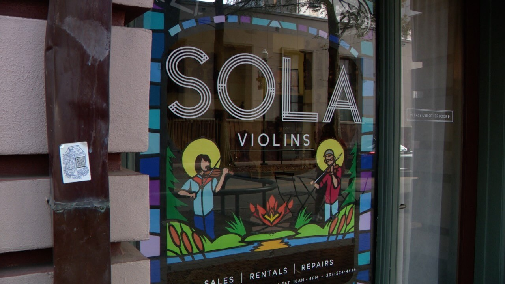
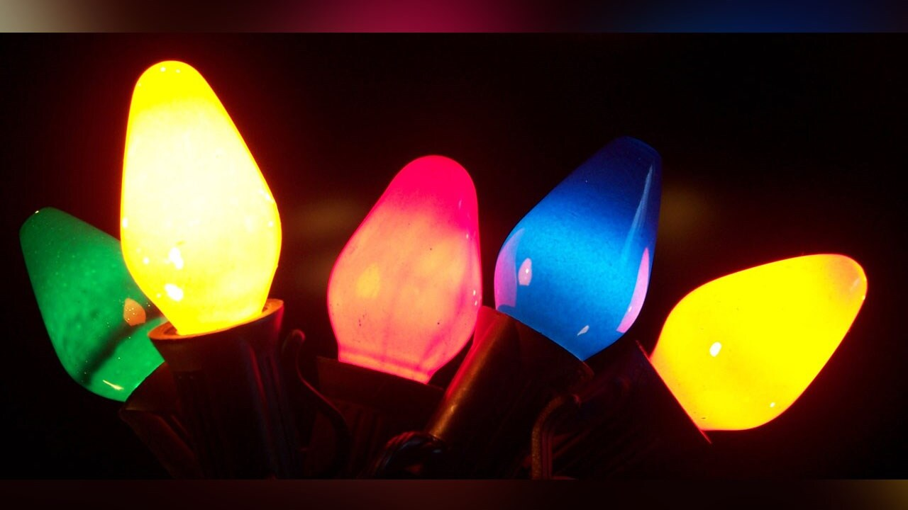

Lafayette artist honors late local musicians with paper artwork at Sola Violins

By: Jazmin Thibodeaux
If you've walked through downtown Lafayette recently, you may have noticed some festive window displays popping up in the holiday spirit. Among them is a striking piece of art at Sola Violins—one that’s not painted, but crafted entirely from paper. What makes this artwork even more special is its deep, personal connection to the Lafayette music community.
Sam Wrobel, the artist behind the creation, says the piece honors the memory of two beloved local musicians who are no longer with us: Chris Stafford, who tragically passed away in a car crash in May, and fiddler Courtney Granger, who died in 2021.
Business owner hosts 32nd Annual Thanksgiving Luncheon for families in need
By: Ange Toussaint
This Thanksgiving, you have an opportunity to make a difference by volunteering at the 32nd Annual Thanksgiving Luncheon, hosted at Bailey’s Tandoori Grill and Ema’s Café. Owner Ema Haq, who started the event 32 years ago, is calling on community members to lend a hand with food deliveries for this heartfelt tradition. Ema first launched the luncheon as a way to give back for the kindness he received when he arrived in Lafayette as a college student from Bangladesh. "People were very kind to me when I first came," said Haq. "In ’83, I didn’t know what Thanksgiving was. So, when someone invited me to their family’s meal, it meant a lot even though I didn’t know what Thanksgiving was. Just to share a meal on that special day was something I will never forget." What started as a small gesture of thanks has grown into an annual tradition that now serves thousands of people each year. "It’s been very humbling and rewarding to see people enjoy the meals we provide. They come and enjoy it just like a full-service restaurant experience," said Haq.
Haq continues the tradition by offering free meals from his restaurants, Bailey’s Tandoori Grill and Ema’s Café. The event provides a full dining experience for anyone in need—whether they choose to dine in or take their meal to go. Organizers will also provide limited deliveries for those who are unable to attend due to physical disabilities.
LIST: Holiday events planned around Acadiana
We all know Acadiana knows how to throw a party - and the holidays are no exception. We've put together this list of events we know about that are planned over the next couple of months.
ACADIA PARISH
The Church Point Community Action Coalition is hosting a community-wide Thanksgiving celebration on Saturday, November 24, 2024, at 5 p.m. This event will be held at Mother Catherine Drexel Hall (693 North Main Street, Church Point, LA 70525)
EVANGELINE PARISH
Evangeline Parish Sheriff’s Office Toy Drive The Evangeline Parish Sheriff's Office is collecting new toys and/or monetary donations for the needy children in our parish. Please drop off the toys or donations at 415 W. Cotton St, Ville Platte, LA 70586. WE ARE OPEN 24 HOURS A DAY! We will collect the toys and donations until December 15th, 2024 at 4PM. The toys will be given to the children in Evangeline Parish. We need girls, boys, and infant toys. WE ARE PARTNERING WITH PINE PRAIRIE FAMILY HEALTHCARE CLINIC. TOYS MAY BE DROPPED OFF AT PINE PRAIRIE FAMILY HEALTHCARE CLINIC DURING NORMAL BUSINESS HOURS. APPLICATIONS MAY BE PICKED UP AT 415 W COTTON ST. Don’t hesitate to get in touch with the Evangeline Parish Sheriff’s Office at 337-363-2161 if you have any questions. If your application is chosen, you will receive a phone call, based on the availability of toy donations. Please help us give a wonderful Christmas to our children in need.